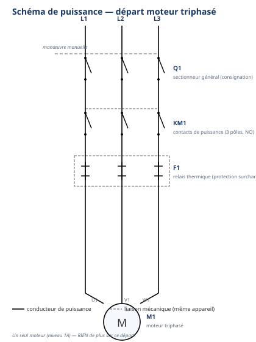

Module atelier S5-E2 · 4 h × 2 — DOCUMENT PROFESSEURClasse puzzle (P1) puis transfert autonome (P2)
SéquenceS5 · semaines 16-17
Salle / ZoneAtelier Élec — zone de l'armoire arrière-boutique + vestiaire
Durée prévue4 h par passage — deux demi-journées distinctes (semaine 16 et semaine 17)
ModalitéClasse puzzle (5 blocs experts) puis câblage collectif ; transfert autonome au passage 2
Encadrement1 professeur, consignation appliquée sans rappel
Tâches
T10 Repérer, raccorder, assembler les réseaux fluidiques, aérauliques et électriques T11 Contrôler les circuits hors fonctionnement T12 Respecter les consignes de sécurité et protéger la zone de travail
Savoirs
S2.2 Lecture de plan et S5.6 Réseaux, matériels électriques AUGMENTÉS — schéma industriel complet Prérequis réactivés : S2.2 (S3-E2), S5.6 (S5-E1)
Savoir-être
Sécurité électrique sans rappel · rigueur du câblage collectif · coopération du puzzle · honnêteté du contrôle
Compétences (≤ 4)
ConfortementC3.6 Câbler, repérer, connecter les liaisons électriques et électroniques sur T10 · T11 · T12 · S2.2 · S5.6 — cible spiralaire : vers Maîtrise ConfortementC3.2 Identifier sur site les réseaux d'alimentation sur T10 · S2.2
Ce qui change depuis S5-E1 — à annoncer explicitement aux élèves — En S5-E1,
les élèves ont manipulé un contacteur isolé et câblé un départ moteur simple, avec l'aide constante du
professeur. S5-E2 introduit un schéma complet qui coordonne plusieurs éléments (bouton marche, bouton
arrêt, auto-maintien, sécurité thermique, voyants) — changement d'échelle électrique, comme le passage du
brasage tendre au brasage fort côté froid. La méthode nouvelle est la classe puzzle (jigsaw) : personne ne
voit le schéma entier d'un coup, chacun devient expert d'un bloc puis le partage. La mise sous tension et les
essais restent, comme en S5-E1, des gestes exclusivement professeur.
Passage 1 / Passage 2 — ce qui change (conduite professeur)
Passage 1 (semaine 16) — classe puzzle, très guidé. Jalon A (≈ 60 min) : constitution de 5 groupes experts
(bouton marche NO, bouton arrêt NF, auto-maintien 13-14, sécurité thermique 95-96, voyants marche/défaut), étude
de la fiche experte, préparation de l'explication, puis restitution croisée en groupes mélangés (un représentant
par bloc). Jalon B (≈ 65 min) : câblage collectif de l'armoire, chaque groupe expert câble sa zone, contrôle hors
tension par zone, mise sous tension et essais par le professeur. Passage 2 (semaine 17) — transfert autonome, sans puzzle. Jalon A' (≈ 40 min) : plus de groupes
experts — lecture individuelle ou en binôme du schéma complet sans repère ; laisser l'élève chercher quelques
instants avant d'intervenir, même en cas d'hésitation visible. Jalon B' (≈ 85 min) : câblage d'une variante
(même logique de circuit, implantation différente), contrôle hors tension, essais par le professeur, en
autonomie guidée — le professeur valide sans démontrer, sauf à la mise sous tension, geste qui reste, dans les
deux passages, un geste exclusivement professeur.
Ce que ce document ajoute au TP élève
Ce document est le pendant exact du document élève : mêmes questions, même
numérotation, même séquençage en 2 passages × 2 jalons, mêmes 5 blocs experts. Il y ajoute : les réponses
attendues aux questions de chaque bloc, la répartition physique du câblage collectif, les critères de contrôle,
les erreurs typiques d'élèves avec leur remédiation, l'organisation du plateau, le minutage recompté pour les
deux passages, et la différenciation (consolidation / standard / approfondissement + FLE + TDAH-DYS). Aucune
valeur non autorisée n'est donnée : les repères KM1, S1, S2, F1, H1, H2 et les numéros de contacts auxiliaires
(13-14, 95-96, 97-98) correspondent à un usage professionnel répandu, à faire valider selon le matériel réel de
l'atelier ; aucune autre valeur (calibre exact, tension de bobine) n'est affirmée au-delà de « selon le
matériel, à faire valider ».
Trame horaire — passage 1 (recomptée ligne à ligne)
Durée
Étape
Contenu
Demi-journée — 4 h 00 (préparation de chantier = 1 h 00)
10 min
1. Débuter la séance
Accueil, appel, rappel de l'organisation (puzzle, puis câblage collectif).
10 min
2. Mettre en situation
Ordre d'intervention OI-S5-4 : câbler la commande complète de l'armoire, à la suite du départ moteur de S5-E1.
5 min
3. Présenter les objectifs
Les 5 « je serai capable de… » affichés, lien avec C3.6/C3.2, statuts du jour.
15 min
4. Vérifier les prérequis
Passage en tenue échelonné ; en attente, mini-quiz sans schéma : 4 étapes de la consignation, schéma commande/puissance simple (télérupteur), les deux parties d'un contacteur.
20 min
5. Donner la démarche
Mise en sécurité de la zone (ARU, trousse, gestes interdits) puis « planter la notion » sur commande/puissance et présentation du principe du puzzle, répartition des 5 blocs.
60 min
6. Guider l'étude (a) — jalon A : puzzle
Groupes experts (5), étude de la fiche-support et du schéma zoomé de leur bloc, préparation de l'explication, puis restitution croisée en groupes mélangés.
15 min
Pause.
65 min
6. Guider l'étude (b) — jalon B : câblage collectif
Câblage de l'armoire par zones (un groupe expert par bloc de commande + un groupe pour la puissance), contrôle hors tension par zone, appel professeur, mise sous tension et essais (marche, auto-maintien, arrêt, défaut si simulé).
15 min
7-8. Synthèse + évaluer et réajuster
Présentation des zones câblées et du schéma complété, auto-positionnement, validation professeur.
10 min
8 bis. Bon de commande
Carnet de bord + bon de commande hebdomadaire.
10 min
9. Ranger — nettoyer
Armoire hors tension, multimètres sur OFF, rangement.
5 min
10. Clôturer la séance
Retour tenue de ville, annonce du passage 2 (semaine 17).
Vérification passage 1 : préparation 1 h 00 + jalon A (60) +
pause (15) + jalon B (65) = 2 h 20 + synthèse/bon de commande/rangement/clôture 40 min = 4 h 00 exactes.
Trame horaire — passage 2 (recomptée ligne à ligne)
Durée
Étape
Contenu
Demi-journée — 4 h 00 (préparation de chantier = 1 h 00, identique)
60 min
Phases 1-5 (identiques au passage 1)
Accueil, situation (rappeler le passage 1 et l'objectif du jour : transposer sans puzzle), objectifs, prérequis, mise en sécurité.
40 min
6. Guider l'étude (a) — jalon A' : lecture autonome
Lecture individuelle ou en binôme des schémas complets sans repère, complétion de mémoire des repères, sans groupes experts.
15 min
Pause.
85 min
6. Guider l'étude (b) — jalon B' : câblage de la variante
Câblage individuel ou en binôme d'une variante, contrôle hors tension, essais professeur — autonomie guidée.
40 min
7-8-8bis-9-10
Synthèse, auto-positionnement, bon de commande, rangement, clôture — annonce de la suite (S5-T1 selon rotation).
Vérification passage 2 : préparation 1 h 00 + jalon A' (40) +
pause (15) + jalon B' (85) = 2 h 20 + synthèse/bon de commande/rangement/clôture 40 min = 4 h 00 exactes.
Les deux passages totalisent bien 240 min chacun ; seule la répartition entre jalons change, conforme au plan de
séance.
Sécurité — rituel déjà acquis, un seul geste qui ne s'allège jamais
La consignation (NF C 18-510) et la VAT ne sont plus démontrées en S5 : elles
sont exigées sans rappel. Nouveauté du câblage collectif : ne fermer le sectionneur Q1 qu'après
avoir personnellement vérifié le contrôle hors tension de chaque zone câblée par les groupes experts,
jamais par lot ni sur simple déclaration. Un seul point de vigilance ne change jamais entre S5-E1 et S5-E2, ni
entre passage 1 et passage 2 : la mise sous tension et les essais après câblage restent des gestes
exclusivement professeur.
Distribution des 5 blocs experts (passage 1)
Bloc
Contenu attribué
Organisation conseillée
1 — bouton marche
Contact NO (S1), fonctionnement, raccordement
1 à 2 binômes selon effectif ; matériel : un bouton poussoir NO démontable si possible
2 — bouton arrêt
Contact NF (S2), fonctionnement, priorité sur S1
1 à 2 binômes ; matériel : un bouton poussoir NF démontable
3 — auto-maintien
Contact auxiliaire KM1 13-14 (NO), principe du maintien
1 à 2 binômes ; matériel : contacteur ouvert (repris de S5-E1) montrant le contact auxiliaire
4 — sécurité thermique
Contacts F1 95-96 (NF) et 97-98 (NO), rôle de chacun
1 à 2 binômes ; matériel : relais thermique ouvert (repris de S5-E1)
5 — voyants
H1 vert (marche, parallèle bobine), H2 rouge (défaut, circuit F1 97-98)
1 à 2 binômes ; matériel : voyants de signalisation, si possible démontés
Constituer les groupes mélangés de restitution en veillant à
ce que chacun comporte un représentant de chaque bloc (1 à 5). Le professeur circule pendant l'étude experte pour
valider au fil de l'eau, sans donner la réponse aux questions à préparer.
Corrigé des questions des 5 fiches expertes
Bloc 1 — si l'on relâche S1 juste après avoir appuyé
Réponse attendue : sans le bloc auto-maintien, le circuit de commande s'ouvre dès que l'on relâche le
bouton NO, et la bobine KM1 n'est plus alimentée : le moteur s'arrête. C'est justement ce que le bloc 3
(auto-maintien) vient corriger — la question prépare la découverte du bloc 3 lors de la restitution croisée.
Bloc 2 — pourquoi le bouton arrêt avant le bouton marche
Réponse attendue : le bouton arrêt (NF, en série, en premier) a la priorité : si l'on appuie sur
arrêt ET marche en même temps, ou si l'arrêt est resté enclenché, le circuit reste ouvert. Placé après, un défaut
du bouton arrêt ne pourrait plus être garanti prioritaire.
Bloc 3 — faut-il garder le doigt sur S1 en permanence ?
Réponse attendue : sans l'auto-maintien, oui, il faudrait garder le doigt en permanence, ce qui est
impossible en usage réel. Le contact auxiliaire KM1 13-14, fermé dès que la bobine est alimentée, relaie le
bouton marche : le circuit reste fermé même après relâchement de S1, tant que rien ne l'interrompt (arrêt ou
défaut thermique).
Bloc 4 — pourquoi deux contacts différents sur le relais thermique
Réponse attendue : le contact 95-96 (NF) sert à couper l'alimentation de la bobine en cas de
surcharge (fonction de protection, en série dans le circuit de commande). Le contact 97-98 (NO) sert à
signaler le défaut (allumer H2) sur un circuit séparé : une seule fonction ne peut pas remplir les deux
rôles, car l'un doit couper et l'autre doit fermer au même instant.
Bloc 5 — H1 et H2 allumés en même temps
Réponse attendue : ce n'est pas normal en usage courant, car H1 (marche) suppose la bobine KM1
alimentée, alors que H2 (défaut) suppose que F1 a coupé cette même alimentation. Si les deux sont allumés, il
faut vérifier le câblage (H1 mal raccordé, ou contact F1 97-98 resté fermé par erreur de câblage).
Point de vigilance organisationnel — Pendant la restitution croisée,
circuler pour vérifier que chaque explication mentionne au moins : le nom du repère (S1, S2, KM1, F1, H1 ou H2),
NO ou NF, et sa place dans le circuit (commande ou puissance, série ou parallèle).
Schéma de commande — version légendée (corrigé). Version élève sans repères en annexe 1.
Point de contrôle
Ce qui est attendu / ce qui alerte
F1 (95-96, NF) et S2 (arrêt, NF)
En série, avant le bloc marche/auto-maintien. Le relais thermique coupe l'alimentation de la bobine dès qu'il détecte une surcharge, quel que soit l'état des boutons.
S1 (marche, NO) // KM1 (13-14, NO)
Montés strictement en parallèle. Erreur fréquente : élève qui les câble en série (perd l'auto-maintien) ou inverse le sens du bouton arrêt et du bouton marche.
Bobine KM1 (A1-A2)
Reçoit le courant du bloc parallèle ; ses bornes A1/A2 ne se raccordent jamais directement en série avec les contacts de puissance (deux circuits séparés).
H1 (vert) en parallèle de la bobine
S'allume exactement quand la bobine est alimentée : signalement fidèle de l'état « marche ».
F1 (97-98, NO) + H2 (rouge)
Circuit séparé, alimenté directement depuis Ph (indépendant du bouton arrêt et de S1) : H2 s'allume uniquement quand F1 est en défaut.
Erreur typique transformée en moment de DÉCOUVERTE — l'auto-maintien oublié
Il est très fréquent qu'un groupe câble S1 seul, sans la branche KM1 13-14 en parallèle. Ne pas corriger
immédiatement : laisser le groupe faire son essai (avec l'accord et la présence du professeur pour la mise
sous tension). L'élève observera alors que le moteur s'arrête dès qu'il relâche le bouton marche. C'est
exactement la question posée dans le bloc 1 de la fiche experte : faire reformuler ce que l'élève observe, puis
demander « quel bloc, parmi les 5, répond à ce problème ? » avant de recâbler. Cette erreur, bien exploitée,
fait comprendre l'auto-maintien mieux qu'une explication frontale — conforme au principe de la charte
« pédagogie de la découverte, autant que faire se peut ».
Corrigé — schéma de puissance complet (légendé)

Schéma de puissance — version légendée (corrigé). Version élève sans repères en annexe 2.
Point de contrôle
Ce qui est attendu / ce qui alerte
Q1 — sectionneur général
Toujours ouvert avant toute intervention (consignation) : c'est l'organe de coupure visible et cadenassable.
KM1 — contacts de puissance (3 pôles)
Fermés uniquement quand la bobine KM1 (circuit de commande) est alimentée — lien mécanique/électrique entre les deux schémas à faire expliciter.
F1 — relais thermique
Un seul appareil, deux fonctions : la partie puissance (3 éléments chauffants en série avec le moteur) ET les deux contacts auxiliaires du schéma de commande — même repère F1 dans les deux schémas, à faire remarquer explicitement.
M1 — moteur
Un seul moteur sur ce départ (niveau 1A) — ne pas ajouter de second départ ni de second moteur, même si des élèves rapides le proposent (cf. variante approfondissement).
Câblage collectif — répartition physique
Chaque groupe expert câble sa propre zone sur l'armoire commune, dans l'ordre
du schéma (F1 95-96 → S2 → bloc S1/KM1 13-14 → bobine → H1 → F1 97-98/H2), pendant qu'un groupe supplémentaire
reprend et complète la puissance (prolongement direct de S5-E1). Le professeur valide zone par zone le
contrôle hors tension avant de fermer le sectionneur : ne jamais mettre l'ensemble sous tension avant que
toutes les zones soient contrôlées conformes.
Corrigé — passage 2 (transfert autonome, sans puzzle)
La variante conserve rigoureusement la même logique électrique (un moteur,
marche/arrêt, auto-maintien, relais thermique, voyants — rien de plus) : seule l'implantation physique change.
Le professeur ne redonne aucun repère : un élève qui redemande le rôle de l'auto-maintien doit être
renvoyé à ses notes du passage 1 (fiche du bloc 3, ou notes prises pendant la restitution croisée) avant toute
nouvelle explication — c'est le principe même de l'autonomie guidée.
Question de synthèse — ce qui ne change jamais
Réponse attendue : la logique du circuit de commande (priorité de l'arrêt, auto-maintien en parallèle du
bouton marche, sécurité thermique en série avant la bobine, voyants sur les deux états) ne change jamais, quelle
que soit l'implantation physique de l'armoire ou la position des appareils sur la platine.
Organisation du plateau
Zone
Fonction / matériel
Points de vigilance
Postes experts — passage 1
5 postes thématiques (un par bloc), chacun avec le composant réel démonté si possible (bouton, contacteur ouvert, relais thermique ouvert, voyants) + fiche-support agrandie.
Prévoir un jeu de fiches-supports en plus grand format ou vidéoprojetées pour faciliter la circulation du professeur.
Armoire collective — jalon B
1 armoire ou grande platine commune par demi-groupe, zones délimitées visuellement (adhésif de couleur) pour chaque bloc expert.
Vérifier avant la séance que l'armoire dispose bien d'assez d'espace pour 5 zones distinctes accessibles simultanément.
Postes individuels — passage 2
1 platine « variante » par élève ou binôme, implantation différente de l'armoire collective.
Prévoir une implantation réellement différente (pas un simple copier-coller) pour que le transfert soit réel.
Erreurs typiques des élèves + remédiation
Erreur observée
Remédiation immédiate
Auto-maintien oublié (S1 seul, sans KM1 13-14 en parallèle)
Voir encadré découverte, feuille 3 : laisser l'essai révéler le problème avant de recâbler, avec la présence du professeur pour la mise sous tension.
Sécurité thermique câblée en parallèle au lieu d'en série (F1 95-96)
Faire vérifier au multimètre : en parallèle, F1 ne pourrait jamais couper l'alimentation de la bobine en cas de surcharge — reformuler la fonction de protection.
H2 câblé sur le même circuit que H1 au lieu du circuit séparé F1 97-98
Faire recolorier au feutre, sur le schéma papier, les deux circuits de signalisation avant de recâbler physiquement.
Coordination défaillante entre groupes experts (zones qui se chevauchent)
Redonner les limites de zone (adhésif de couleur) et rappeler que l'on ne touche pas la zone d'un autre groupe sans le prévenir.
Passage 2 : élève qui redemande le vocabulaire déjà vu au passage 1
Renvoyer systématiquement à ses notes du passage 1 avant de réexpliquer.
Différenciation
Profil
Adaptation
Consolidation
Élèves positionnés 1-2 à C3.6 lors d'É2 (voir S5-T0) : leur attribuer le bloc « bouton marche » ou « voyants » (plus simples) et prévoir un accompagnement renforcé du professeur au jalon B.
Standard
Déroulement tel que décrit dans le document élève, 2 jalons par passage, aides retirées au passage 2.
Approfondissement (tutorat)
Après validation de sa zone, l'élève explique à un pair d'un autre bloc le lien entre schéma de commande et schéma de puissance (même repère KM1 dans les deux), sans jamais câbler à sa place ; peut esquisser, à l'oral seulement, ce que donnerait un second départ moteur (sans le câbler : hors niveau 1A).
FLE
Vocabulaire nouveau (commande, puissance, auto-maintien, relais thermique, voyant) introduit avec pictogramme + geste (montrer le composant réel, pas seulement le nommer) ; repères KM1/S1/S2/F1/H1/H2 toujours accompagnés de la couleur ou de la forme du composant comme repère visuel.
TDAH / DYS
Chaque bloc expert traité sur sa propre fiche, visuellement isolé des autres ; étapes de câblage collectif découpées en cases à cocher séparées par zone ; visa professeur matérialisé par une case bien visible à ne pas sauter.
Échelle FrigorX : 0 Non évalué · 1 Non acquis · 2 En cours
d'acquisition · 3 Acquis · 4 Parfaitement maîtrisé. Statuts du jour : C3.6 et C3.2 Confortement —
aucune compétence en statut Évaluation dans ce module (rappel : pas d'éval propre dans S5, cf. cadrage ;
l'évaluation É3 est rangée en S6). Les positionnements du jour alimentent le repérage pour la remédiation
continue.
Compétence / savoir-être
0
1
2
3
4
C3.6 Câbler, repérer, connecter les liaisons électriques et électroniques sur T10 · T11 · T12 · S2.2 · S5.6
Compétence non observée ce jour.
Câblage non conforme au schéma complété malgré aide, ou circuit de commande et circuit de puissance confondus, ou auto-maintien absent non corrigé après contrôle.
Câble avec l'aide du professeur pour au moins un bloc (bouton, auto-maintien, protection ou voyant).
Câble seul(e) (au sein du groupe collectif ou en autonomie) la commande ET la puissance conformes aux schémas complétés, contrôle hors tension réalisé avant tout appel.
Comme « Acquis », et explique à un pair le rôle de l'auto-maintien et de la sécurité thermique dans le circuit.
C3.2 Identifier sur site les réseaux d'alimentation sur T10 · S2.2
Compétence non observée ce jour.
Ne repère pas l'arrivée ni les circuits sur l'armoire réelle, même avec aide.
Repère l'arrivée et les circuits avec l'aide du professeur.
Repère seul(e), sur l'armoire réelle, l'arrivée, le circuit de commande et le circuit de puissance concernés.
Comme « Acquis », et explique pourquoi ce repérage est indispensable avant toute intervention collective.
Savoir-être — sécurité, coopération du puzzle, honnêteté
Non observé ce jour.
Geste interdit commis (fil touché sans VAT, intervention sur la zone d'un autre groupe) : niveau 1 automatique ; ou ne participe pas au partage d'expertise.
Sécurité globalement respectée, quelques rappels nécessaires ; explication de son bloc incomplète mais tentée.
Consignation et VAT appliquées sans rappel, explique clairement son bloc, écoute activement les autres blocs.
Comme « Acquis », et facilite la compréhension d'un pair en difficulté sur un bloc qui n'est pas le sien.
Point de vigilance correction — tout geste interdit de sécurité entraîne
automatiquement un niveau 1 — Non acquis sur le savoir-être, quelle que soit la qualité du câblage réalisé
ce jour-là : principe non négociable, cohérent avec les grilles S1 à S4. Les positionnements de ce module ne
sont pas remontés (aucun statut Évaluation dans S5) mais nourrissent le repérage des élèves à revoir en
priorité avant l'évaluation É3 (S6).
Croisements interdisciplinaires
Prévention des risques électriques — consignation, NF C 18-510 ;
Technologie — lecture de plan industriel (S2.2, S5.6), appui direct de S5-E1 et S3-E2 ;
Co-intervention français — préparation de l'explication orale du bloc expert (carnet de bord F3) ;
Remédiation post-É2 — les élèves positionnés 1-2 à C3.6 lors d'É2 bénéficient d'un accompagnement
renforcé au jalon B (voir S5-T0 et variante consolidation ci-dessus) ;
Vers S5-F1/F2 et S6 — la rigueur de câblage collectif et le contrôle hors tension par zone préparent
la coordination attendue lors de l'épreuve azote (S5-F2) et de l'évaluation É3 (S6).
D'après : SCHEMA DE
PUISSANCE.docx (schéma type, repères KM — Fiche Communication technique, 02_CAP-IFCA/C1-Communiquer) ; Activité
n°1 câblage schémas de commande.docx et Activité n°3 câblage schémas de puissance.docx (02_CAP-IFCA/C3-Realiser,
documents 2A — allégés ici à UN moteur, marche/arrêt + auto-maintien + relais thermique + voyants, pour le niveau
1A) ; TP formatif horloge et contacteur.docx (02_CAP-IFCA/S4-Electricite, visuels) ; C06 les contacteurs
principaux, C07 les relais thermiques, C08 moteur — ELEVE/PROF (02_CAP-IFCA/S4-Electricite, prérequis directs de
S5-E1) ; modèle 2A de référence : Séance 1 — Câblage de l'armoire électrique (09_Progressions-Sequences/
Usine-26-27/S12, allégé de 2 moteurs à 1 seul moteur pour ce niveau). Repères normalisés (KM1, S1, S2, F1, H1, H2 ;
contacts auxiliaires 13-14, 95-96, 97-98) : usage professionnel courant, à faire valider selon le matériel réel de
l'atelier — aucune autre valeur (calibre, tension de bobine) n'est affirmée au-delà de « selon le matériel, à
faire valider ». Symboles graphiques : bibliothèque de symboles normalisés FrigorX
(catalogue interne de l'usine de contenu) — bobine_contacteur, contacts NO/NF, contact_
puissance_3p_no, relais_thermique, contact_thermique_nf, moteur_triphase, bp_no_marche, bp_nf_arret, sectionneur_
3p, voyant_vert, voyant_rouge, copiés dans `images\` de ce dossier ; schémas de commande et de puissance composés
à partir de ce vocabulaire graphique par le rédacteur, fidèles à la topologie des fiches sources et à la méthode
déjà appliquée en S3-E2 (télérupteur/minuterie). Continuité directe des documents S3-E2 et S5-E1 produits pour
cette même classe.